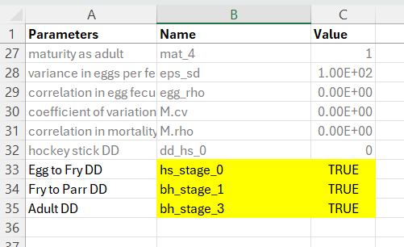
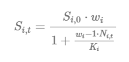
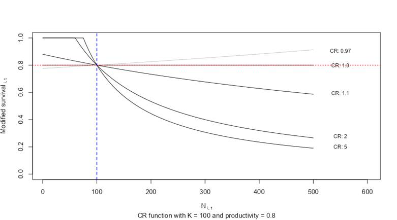
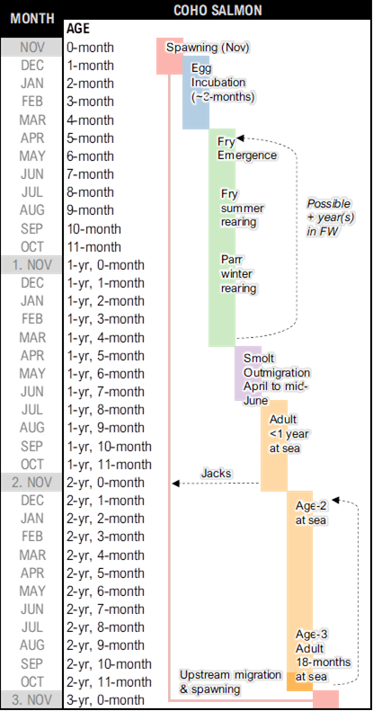

8 Life Cycle Model (Population Model) Habitat & Stressors
This chapter continues from the Overview chapter, which covers vital rates, matrix representations, and stochastic simulations.
8.1 Density-Dependent Constraints on Growth
It is rare for natural populations to grow in perpetuity without any constraints on growth, survival, and reproduction. Therefore, life cycle models will typically include a mechanism (or multiple mechanisms) to constrain population growth or limit high densities. We refer to these as density-dependent bottlenecks on population growth.
Stressor-response relationships can be incorporated into the life cycle model without accounting for density-dependent constraints, but the interpretation of the results will be limited to eigen analyses of intrinsic growth rates and sensitivities/elasticities assessments (e.g., comparing lambda values & productivity). While useful, these outputs are sometimes difficult to communicate to diverse working groups, and they may also be misleading, especially if habitat is limited. If there are key demographic bottlenecks in the life cycle, then a density-independent model may inappropriately lead users to focus on stressors linked to fecundity or early life-stage survivorship before a key bottleneck (e.g., egg-to-fry survivorship) is experienced. However, if (in reality) a population experiences strong density-dependent constraints on growth, then factors limiting habitat availability or productivity of a key life stage will become more influential. A common example of density-independent and density-dependent constraints on growth can be found in the transition between the early life stages of Steelhead (Oncorhynchus mykiss) as individuals transition from egg-to-fry (a density-independent life stage) and then from fry-to-smolts/parr (a density-dependent life stage) (Ward & Slaney, 1993).
The life cycle modeling component of the CEMPRA tool has two (optional) mechanisms to incorporate density-dependent growth constraints. The primary mechanism considers stage and location-specific carrying capacities while a second (optional) mechanism considers adult carrying capacity and compensation ratios. In most cases incorporating density-dependent constraints with stage and location-specific carrying capacities can provide a more intuitive workflow; however, some individuals well-versed in Population Ecology may also be able to leverage compensation ratios.
We strongly recommend starting with life stage-specific density dependent bottlenecks (e.g., a location is expected to support up to X fry, Y parr, and Z spawners based on habitat availability). Avoid the use of compensation ratios unless you are already familiar with their application in population ecology (most users will tend to find working with compensation ratios a little bit more advanced and sometimes non-intuitive).
Both mechanisms of density-dependent constraints utilize the Beverton-Holt (BH) function or a strict “hockey stick” (HS) style fixed thresholds to limit population growth at key demographic bottlenecks. The Beverton-Holt function is an asymptotic recruitment curve that calculates the expected number of individuals entering the next stage as a function of the number of individuals in the current stage. In the case of stage-structured matrix models, this relationship constrains the number of individuals transitioning between two stages (e.g., from fry to stage 1, or from stage 2 to stage 3). The BH function takes three input parameters: an estimate of stage-specific carrying capacity (K) for the destination stage, a baseline estimate of density-independent survival (alpha = surv_X from the species profile) as the transition rate, and the number of individuals in the source stage class (Nt) for the simulation year. The BH equation is: (alpha * Nt) / (1 + (alpha / K) * Nt). At low Nt, nearly all individuals survive (up to alpha * Nt, e.g., 0.8 * 100 = 80); However, at high Nt, output saturates toward K. The hockey-stick method is simpler: if the number of individuals in a stage exceeds K, the population is truncated to K.
The following interactive figure provides an overview of the Beverton-Holt function, showing the number of individuals at time t (Nt) on the x-axis and the number of individuals at time t+1 (Nt+1) on the y-axis. For example, this could be the number of Age-0 fry on the x-axis and the number of Age-1+ parr recruits on the y-axis. The curved black line shows the effects of density-dependent growth (limited recruitment as the number of individuals in the source stage is increased). The steep red dashed line is the density-independent (DI) abundance where Nt+1 = alpha × Nt. The blue dotted line is the carrying capacity K. The “hockey stick” style density-dependent method simply applies the horizontal blue dotted line as a fixed threshold that cannot be exceeded. Use the sliders to explore how changing K and alpha (productivity/survival) affects the shape of the BH curve.
Interactive Beverton-Holt function for density-dependent growth. The black curve shows the BH recruitment (constrained by K), the red dashed line shows density-independent abundance (Nt+1 = α × Nt), and the blue dotted line shows the carrying capacity K. Adjust the sliders to explore how changing K and α affects the shape of the curve.
8.1.1 Location and Stage-Specific Carrying Capacities
For systems with some habitat data, capacity estimates and/or known relationships between habitat availability and maximum densities, it is possible to use location-specific carrying capacities for one or more rate-limiting life stages (e.g., Location X can produce up to 1,200 parr). If this is the case, a special table (the locations carrying capacity table) can be included that specifies the maximum number of individuals per stage class per life stage per location. This table exists as a special input file that can be used to control density-dependent growth in the life cycle model (see examples in Step 2 below). Users must estimate the average carrying capacity for a given life stage at each location (e.g., k_stage_1_mean: 1,200). If the location carrying capacity table is provided, any cells that are populated with values are assumed to have density-dependent constraints. Any cells that are left blank are assumed to be governed only by density-independent factors and do not have any density-dependent constraints.
ImportantK Values Refer to the Destination (TO) Stage
The single most important thing to understand about density dependence in CEMPRA: K values and DD flags always refer to the DESTINATION (TO) stage — the stage that individuals are entering or occupying. The constraint limits how many individuals can enter or occupy that stage.
For example:
k_stage_0_mean= capacity of fry (age-0). Constrains the egg → fry transition.k_stage_1_mean= capacity of stage 1 (e.g., parr). Constrains the fry → stage 1 transition.k_stage_2_mean= capacity of stage 2. Constrains the stage 1 → stage 2 transition.k_stage_B_mean= total spawner capacity. Constrains total abundance across all mature stages.
How the Beverton-Holt function maps to transitions:
The BH equation is: (alpha * Nt1) / (1 + (alpha / k) * Nt1)
| Parameter | Meaning |
|---|---|
alpha |
Survival rate FROM the source stage (e.g., sE for eggs, s0 for fry, surv_X for stage X) |
Nt1 |
Abundance in the FROM (source) stage |
k |
Carrying capacity of the TO (destination) stage |
NoteComplete DD Transition Reference Table (click to expand)
The table below shows exactly which stages are involved in each density-dependent constraint, what survival rate is used as alpha in the BH equation, and what abundance count is used as Nt1.
| Habitat K column | Life cycle flag(s) | FROM stage | TO stage | alpha (BH) | Nt1 (BH) |
|---|---|---|---|---|---|
k_stage_0_mean |
bh_stage_0 |
Eggs | Fry (age-0) | sE (egg survival) | Egg count |
k_stage_0_mean |
hs_stage_0 or dd_hs_0 |
— | Fry (age-0) | n/a (hard cap) | n/a |
k_stage_1_mean |
bh_stage_1 |
Fry (age-0) | Stage 1 | s0 (fry survival) | Fry count |
k_stage_1_mean |
hs_stage_1 |
— | Stage 1 | n/a (hard cap) | n/a |
k_stage_2_mean |
bh_stage_2 |
Stage 1 | Stage 2 | surv_1 | N stage 1 |
k_stage_2_mean |
hs_stage_2 |
— | Stage 2 | n/a (hard cap) | n/a |
k_stage_X_mean |
bh_stage_X |
Stage X-1 | Stage X | surv_(X-1) | N stage X-1 |
k_stage_X_mean |
hs_stage_X |
— | Stage X | n/a (hard cap) | n/a |
k_stage_B_mean |
bh_spawners |
(all mature) | Total spawners | per-stage | per-stage |
k_stage_B_mean |
hs_spawners |
— | Total spawners | n/a (hard cap) | n/a |
In the previous example (Location-specific capacities), the population model will run with constraints on stage_1, meaning that the fry-to-stage-1 transition will be governed by a Beverton-Holt or Hockey-Stick relationship (depending on which tag is set in the life cycle profile), and the abundance (or density) of stage_1 individuals will be constrained for each location according to the values provided in the locations carrying capacity table.
The CEMPRA tool does not support the development of these locations and stage-specific carrying capacity estimates, but it’s assumed that relevant reference literature will be used to develop appropriate input values (e.g., if stage 1 is Steelhead parr; regional densities for Steelhead parr are roughly 1,500 parr/km of stream; and fish-accessible reaches within Rock Creek sum up to roughly 800m in length; then k_stage_1_mean should equal roughly 1,200 parr). Developing these estimates alongside a species profile is generally case-specific, but the advantage is that projection from the CEMPRA tool will ultimately account for habitat quality and habitat availability.
For support on estimating upper capacities limits for trout and salmonids in streams from basic habitat data see (Cramer & Ackerman, 2009) (Beechie et al., 2021). Other reports can be referenced to estimate capacities in estuaries (e.g., (Chen, 2024)) and lakes (e.g., for Sockeye see: (Cox-Rogers et al., 2010), many other examples exist). To get started we suggest reviewing this great overview video by Nick Ackerman https://www.youtube.com/watch?v=oSYapG2o4bc. Most capacity-estimation methods focus on lotic habitats, breaking systems into reaches (e.g., Reach 1, 2, 3) or habitat units such as pools, riffles, and runs. This framework works well for species like Coho, Chinook, Bulltrout, and Steelhead, etc. which rely heavily on stream habitats throughout much of their freshwater life cycle. However, Sockeye differ fundamentally because their spawning and juvenile rearing depend primarily on large lake ecosystems, & only pass through stream reaches. Therefore for Sockeye and other lentic species, it is more appropriate to define model ‘locations’ at the scale of lakes or major basins, and to estimate capacity based on lake productivity and rearing potential rather than reach-scale stream habitat metrics. Stream reaches still matter, particularly for out-migration bottlenecks, migration survival, and tributary spawning where it occurs, but they should be treated as stressors or modifiers, not as the primary units of capacity. We recommend spending time here as group defining the best approach before proceeding with the rest of the modeling.
If the locations carrying capacity table is provided, the population projections will implement density-dependent growth constraints for species-specific life stages according to the stage-specific carrying capacities with a Beverton-Holt curve or a fixed Hockey-Stick upper threshold (depending on which tag is set in the life cycle profile). The Beverton-Holt function uses the density-independent survival rate (surv_X) as alpha and the stage K as the asymptotic limit, while the Hockey-Stick simply truncates abundance to K. The Steelhead spawners figure shows an example simulation for Steelhead from the CEMPRA tool with adult spawning on the y-axis and a stage-1 (parr) carrying capacity constraint set to 160,000 individuals. In the Steelhead example, the only density-dependent constraint is the parr carrying capacity of the system (set to 160,000). The number of adult spawners is, therefore, a derived metric from the life cycle model. Implementing density-dependent constraints with location and stage-specific carrying capacities is different from the approach with compensation ratios, where users are required to first input an estimate of the adult carrying capacity and work backwards from there.
WarningBH vs HS: Different Types of Constraint
Beverton-Holt (BH) and Hockey-Stick (HS) are not interchangeable — they constrain different things:
- BH (
bh_stage_X): Constrains the transition INTO stage X. It is a flow constraint — it uses the survival rate and abundance from the previous stage to compute an asymptotic recruitment curve. At low abundance, many individuals survive the transition (up to the Nt * density-independent survivorship alpha value); However, at high abundance, the number entering stage X saturates toward K. The output is always less than K (approaching it asymptotically). - HS (
hs_stage_X): Constrains the population OF stage X. It is a state constraint — a hard cap applied after the matrix projection. If the projected number of individuals in stage X exceeds K, it is truncated to K. No transition math is involved. - Spawner caps (
bh_spawners/hs_spawners): Constrain the total population across all mature stages. Forhs_spawners, this is a hard cap with proportional reduction across spawning age classes. Forbh_spawners, K is redistributed proportionally across spawning stages and individual BH constraints are applied per-stage.
Switching between bh_stage_X and hs_stage_X changes what is being constrained, not just how it is constrained. For example, bh_stage_1 constrains the fry → stage 1 transition (using fry count and s0), while hs_stage_1 caps the current population in stage 1 regardless of how they got there. This is by design, but users should be aware of this distinction when choosing between the two mechanisms.
TipWhat the Model Reports: After the Bottleneck
The population values stored and reported by the model are always the post-DD abundances. The sequence each time step is:
- Matrix projection — density-independent survival and reproduction are applied to produce projected abundances.
- DD constraints — Beverton-Holt curves and/or Hockey-Stick caps are applied to constrain the projected abundances.
- Store results — the constrained (post-DD) abundances are saved as the population state for that time step.
This means that when you see abundance values in the model output (plots, tables, or the N matrix), you are seeing the number of individuals after any density-dependent bottleneck has been applied — not the unconstrained projection. For example, if bh_stage_1 is set with K = 5,000, the reported stage-1 abundance will never exceed 5,000 (and in practice will be somewhat below K due to the asymptotic shape of the BH curve).

Simulation of Steelhead Spawners (y-axis) with stage_1 (parr) capacity set to 160,000.
8.1.1.1 Step 1: Identify Which Life Stages Have Density-Dependent Bottlenecks
First we identify which life stages have density-dependent bottlenecks and we define these in the life cycle profile csv file. These are generally added to the bottom of the life cycle parameters csv file. This will tell the model where to apply density-dependent bottlenecks and which functions to use.
For Non-anadromous Populations like Rainbow Trout, Bull Trout, Cutthroat Trout etc.
For non-anadromous (iteroparous) populations of resident trout and char, spawning more than once in their life cycle, the following density-dependent tags are available. Add these to the bottom of the life cycle profile csv in the Name column and set Value to TRUE.
| Name | Mechanism | Description |
|---|---|---|
bh_stage_0 |
Beverton-Holt | Egg-to-fry transition. K0 = max fry capacity. BH curve applied with alpha = egg survival (sE) and Nt1 = egg count. |
hs_stage_0, dd_hs_0 |
Hockey-Stick | Egg-to-fry hard cap. Fry count is truncated to K0 if exceeded. |
bh_stage_1, bh_stage_2, … |
Beverton-Holt | Constrains the transition INTO the named stage. K = capacity of the destination stage. For example, bh_stage_1 constrains the fry-to-stage-1 transition (alpha = s0, Nt1 = fry count, K = K1). bh_stage_2 constrains stage-1-to-stage-2 (alpha = s1, Nt1 = N_prev stage 1, K = K2). |
hs_stage_1, hs_stage_2, … |
Hockey-Stick | Hard cap on the population OF the named stage. If N in that stage exceeds K, it is truncated to K. For example, hs_stage_1 caps stage-1 abundance at K1; hs_stage_2 caps stage-2 abundance at K2. Note: HS caps the current population (a state constraint), while BH constrains the transition (a flow constraint). |
bh_spawners |
Beverton-Holt | Total spawner capacity across all mature age classes. Mature stages are identified via the maturity vector (mat > 0). When total spawners exceed the cap, K is redistributed proportionally across spawning stages, and BH is applied per-stage. Requires k_stage_B_mean in the habitat capacities file. |
hs_spawners |
Hockey-Stick | Total spawner hard cap across all mature age classes. When total spawners exceed the cap, all spawning stages are reduced proportionally. Requires k_stage_B_mean in the habitat capacities file. |
For Anadromous Populations like Chinook, Coho, Sockeye, Chum, Pink etc.
For anadromous (semelparous) populations of salmon, spawning only once in their life cycle and then dying, the following density-dependent tags are available. Add these to the bottom of the life cycle profile csv in the Name column and set Value to TRUE. The tags are similar to the non-anadromous tags but require a pb (pre-breeder) or b (breeder) prefix to distinguish between non-spawning and spawning stage classes.
| Name | Mechanism | Description |
|---|---|---|
bh_stage_0 |
Beverton-Holt | Egg-to-fry transition. K0 = max fry capacity. Same tag as non-anadromous; does not need ‘pb’ or ‘b’. |
hs_stage_0 |
Hockey-Stick | Egg-to-fry hard cap. Same tag as non-anadromous; does not need ‘pb’ or ‘b’. |
bh_stage_pb_1, bh_stage_pb_2, … bh_stage_b_3, bh_stage_b_4, … |
Beverton-Holt | Constrains the transition INTO the named pre-breeder (Pb) or breeder (B) stage. For example, bh_stage_pb_1 constrains fry-to-stage-1 (alpha = s0, Nt1 = fry count, K = K1). The ‘pb’ tag targets pre-breeder stages; the ‘b’ tag targets specific spawner (breeder) stages. For spawner caps pooled across age classes, use bh_spawners instead. |
hs_stage_pb_1, hs_stage_pb_2, … hs_stage_b_3, hs_stage_b_4, … |
Hockey-Stick | Hard cap on the population OF the named pre-breeder or breeder stage. For example, hs_stage_pb_1 caps stage-1 (Pb) abundance at K1. hs_stage_b_4 caps the stage_B_4 spawner class. Note: HS caps the current population (a state constraint), while BH constrains the transition (a flow constraint). |
bh_spawners |
Beverton-Holt | Total spawner capacity pooled across all spawner (B) age classes. When total spawners exceed the cap, K is redistributed proportionally across spawning stages and BH is applied per-stage. Requires k_stage_B_mean (or k_spawners_mean) in the habitat capacities file. |
hs_spawners |
Hockey-Stick | Total spawner hard cap pooled across all spawner (B) age classes. When total spawners exceed the cap, all spawning stages are reduced proportionally. Requires k_stage_B_mean (or k_spawners_mean) in the habitat capacities file. |
ImportantReminder: K = Destination Stage, DD Flag = Destination Stage
When reading the tables above, remember that every DD flag and every K column refers to the destination (TO) stage. The flag bh_stage_1 does not mean “apply DD to stage 1 survival” — it means “constrain the number of individuals entering stage 1 from the previous stage (fry).” Similarly, k_stage_1_mean is the maximum capacity of stage 1, not of the fry that feed into it. See the complete transition reference table above for the full mapping.
NotePractical Example: Setting a Hard Cap at the Fry-to-Stage-1 Transition (Non-Anadromous)
To set a hard cap (Hockey-Stick DD constraint) at the fry-to-stage-1 transition for a non-anadromous run:
In your life cycle params CSV, add the following row:
"hs_stage_1","hs_stage_1",TRUEIn your habitat capacities CSV, include a k_stage_1_mean column with your desired cap value (e.g., 5000).
This will hard-cap the stage-1 population at 5,000 individuals at each location. If you want the asymptotic Beverton-Holt curve instead of a hard cap, use bh_stage_1 instead of hs_stage_1 — same K column, different constraint shape. With BH, the stage-1 abundance will approach 5,000 asymptotically but never quite reach it; with HS, it will be truncated to exactly 5,000 if exceeded.
Select Target Density-Dependent Bottlenecks and Update the Life Cycle Profile File.
We then need to select target density-dependent bottlenecks of interest (from the name tags above) and update the life cycle profile file to tell the model which life stages have density-dependent constraints and which functions to use (e.g., bh vs hs).
The life cycle profile file should look something like this. Use the exact naming convention in the Name column, set the Value column to TRUE and provide a custom entry in the Parameters column as a user-friendly reminder of which life stage the density-dependent constraint is being applied to.


8.1.1.2 Step 2: Create the Location-Specific Habitat Capacities File
In the previous step we told the model which life stages have density-dependent constraints and which density-dependent functions to use, but we still need to specify the location-specific K (capacity) values for each life stage. For example, if we know we have density-dependent constraints on egg-to-fry, fry-to-parr, and spawners, we need to specify the upper carrying capacities for each of fry, parr, and spawners for each location. We enter this information in the habitat capacities file.
The habitat capacities file can be generated as an Excel or csv file and defines the upper carrying capacity for each location (as rows) and each life stage at the target location (column values). The habitat capacities file always begins with columns HUC_ID (location id) and NAME (location or reach name), and then includes a series of wildcard columns that define the maximum number of individuals that the location is able to support for that life stage. See the examples below:
Example Habitat Capacities File for a Non-Anadromous Population
| HUC_ID | NAME | k_stage_0_mean | k_stage_1_mean | k_stage_3_mean |
| 1 | Reach 1 | 627,594 | 238,987 | 38,073 |
| 2 | Reach 2 | 1,247,555 | 537,196 | 15,384 |
| 3 | Reach 3 | 913,589 | 359,136 | 20,943 |
In the previous table we have the HUC_ID & NAME columns for the location - to link information to the stressor data, and then we have a series of additional columns:
k_stage_0_mean: Fry (age-0) capacity at the location. K0 constrains the egg-to-fry transition. If
hs_stage_0orbh_stage_0is set to TRUE in the life cycle file, fry abundance will be restricted to this value (627,594 for Reach 1 in this example).k_stage_1_mean: Stage 1 capacity (e.g., parr). K1 constrains the fry-to-stage-1 transition. If
bh_stage_1is set to TRUE in the life cycle file, a Beverton-Holt curve will limit the number of stage-1 individuals based on fry abundance and fry survival (s0). Ifhs_stage_1is used instead, a hard cap is applied.k_stage_3_mean: Stage 3 capacity. K3 constrains the stage-2-to-stage-3 transition. Requires
bh_stage_3orhs_stage_3in the life cycle file.
Additional columns can be added for k_stage_4_mean etc. provided that they are defined in the life cycles file. To constrain total spawners across all mature age classes, include a k_stage_B_mean column and set bh_spawners or hs_spawners to TRUE in the life cycle file. Next we show an example for an anadromous population.
Example Habitat Capacities File for an Anadromous Population
| HUC_ID | NAME | k_stage_0_mean | k_stage_Pb_1_mean | k_spawners_mean |
| 1 | Reach 1 | 627,594 | 273,052 | 38,073 |
| 2 | Reach 2 | 1,247,555 | 134,284 | 15,384 |
| 3 | Reach 3 | 913,589 | 89,385 | 20,943 |
In the previous table we have the HUC_ID & NAME columns for the location - to link information to the stressor data, and then we have a series of additional columns. These are similar to but slightly different than the non-anadromous populations because we need to specify Pb (pre-breeder) vs B (breeder):
k_stage_0_mean: Fry (age-0) capacity at the location. K0 constrains the egg-to-fry transition. Same column name as non-anadromous; no ‘pb’ or ‘b’ prefix needed for the fry stage class.
k_stage_Pb_1_mean: Stage 1 pre-breeder (Pb) capacity (e.g., parr). K1 constrains the fry-to-stage-1 transition. If
bh_stage_pb_1orhs_stage_pb_1is set to TRUE in the life cycle file, the number of stage-1 (Pb) individuals will be constrained at this location.k_spawners_mean: Total spawner capacity pooled across all spawner age classes. Alternative column names (
k_stage_B_mean,k_stage_b_mean) will also work. Requiresbh_spawnersorhs_spawnersin the life cycle file. You can also specify capacities for individual spawner age classes (e.g.,k_stage_B_4_mean,k_stage_B_5_mean) but this assumes the age-class proportions are well-known and consistent.
ImportantReminder: Column Names = Destination Stage Capacity
Each k_stage_X_mean column specifies the capacity of stage X (the destination). For example, k_stage_1_mean = 5000 means “this location can support up to 5,000 stage-1 individuals.” The constraint is applied to individuals entering or occupying stage 1 — not to the fry that feed into it. The model output for stage 1 at this location will reflect the post-bottleneck abundance (i.e., after the BH curve or HS cap has been applied).
Note: only include K columns for stages that have density-dependent flags set in the life cycle file. Columns with NA or missing values are allowed — the model will skip density dependence for those stages at that location.
8.1.1.3 Step 3: Final Checks
Define stage/age classes with known or expected density dependent constraints
Update the life cycle profile file to include target density dependent bottlenecks with their associated functions (e.g.,
hs_stage_0, bh_spawners etc.). Set the Value column to TRUE so they will be applied in the modelCreate or update the habitat capacities file. Define the K capacity values for each location and life stage.
Recommended: Run the model in the Shiny app to ensure it is functioning as intended.
8.1.2 Compensation Ratios for Density-Dependent Growth (Optional for Advanced Use-Cases)
Most users should skip this section. Compensation ratios are a legacy mechanism retained for backward compatibility and specialized research applications. In practice, the location and stage-specific carrying capacities described above (with Beverton-Holt or Hockey-Stick functions) provide a simpler, more transparent, and more flexible way to implement density dependence. Use-cases where compensation ratios are genuinely preferable are rare — typically limited to situations where stage-specific K values cannot be estimated independently and the only available information is an overall adult carrying capacity plus literature-derived compensation ratio estimates. If you are unsure which approach to use, use stage-specific carrying capacities and set all compensation ratios to 1.0.
It is technically possible to combine compensation ratios with location and stage-specific carrying capacities, but this is strongly discouraged as it makes model behavior difficult to interpret and diagnose.
Compensation ratios (CR values) are a reparameterization of the classical Beverton-Holt function for density-dependent growth. They derive stage-specific K values from the stable-stage distribution of the transition matrix, which means the user only controls adult K directly — all other stage capacities are calculated automatically. This is less flexible than specifying stage-specific K values directly.
8.1.2.1 Compensation Ratio CR for life stage i:
Compensation Ratios (CR) adjust the survivorship of each life stage based on the observed densities (abundance, Ni,t) and stage-specific carrying capacities (Ki):

In the CR equation above, Si,0 is the baseline survivorship (surv_X) under density-independent growth conditions; wi is the compensation ratio (CR value) of life stage i; Ni,t is the current number of individuals in life stage i in a given time step (t); and Ki is the carrying capacity of life stage i. The compensation ratios, in essence, modify the survivorship of each life stage based on how far the stage-specific abundance (Ni,t) has departed from its assumed carrying capacity (Ki).
A plot of compensation ratios is provided below to illustrate their effects on stage-specific survivorship transitions. In this example, abundance values of a hypothetical stage class (i) are plotted along the x-axis with a carrying capacity (Ki) set to 100 individuals (blue vertical line). The hypothetical stage class (i) has a baseline survivorship (productivity) value of 0.8 in the absence of density-dependent growth conditions (horizontal red line). The y-axis on the plot shows how the default survivorship value of 0.8 is modified based on the stage-specific compensation ratio for stage class (CRi). The survivorship value for the stage class is suppressed as the abundance values exceed the carrying capacity K. The effects are amplified as compensation ratios are increased. Compensation ratios of 1.0 leave the vital rate unmodified. Compensation ratios less than 1.0 increase survivorship values (allowing for a potential positive effect of density). When the abundance of the age class is less than the carrying capacity, baseline survivorship values can actually increase. However, within the model code, adjusted survivorship values are fixed so that they never exceed 1.0 for any stage transition.

Influence of compensation ratios on stage-specific survivorship.
8.1.2.2 Compensation Ratios & Stage-Specific Carrying Capacity Estimates:
When using compensation ratios, it is only possible to modify the carrying capacity for the adult age class via the K parameter in the life cycle profile. The K values for other age classes are derived from the stable-stage distribution of the underlying transition matrix. This means that users who implement density-dependent growth via compensation ratios can only modify stage-specific abundance relative to the stable stage distribution. If you know (or can estimate) critical location-specific and stage-specific capacities (e.g., maximum stage_1 parr at location X), then refer to the Location and Stage-Specific Carrying Capacities section above to implement density-dependent growth constraints directly.
Stage-specific capacities (K) with compensation ratios:
- K (Stage-0, eggs): Calculated as the product of the number of individuals in all mature age classes, multiplied by maturation probabilities for each class, the number of spawning events, eggs per female, sex ratio and spawning interval.
- K (Stage-0, fry): K values for young-of-the-year (fry/Age-0) individuals are calculated as the product of K (Stage-0, eggs) * the egg survival (SE).
- K (Stage-1): Calculated from the stable-stage distribution of the transition matrix (B) after setting the adult stage (Stage-4) to K (e.g., 100).
- K (Stage-2): Calculated from the stable-stage distribution of the transition matrix (B) after setting the adult stage (Stage-4) to K (e.g., 100).
- K (Stage-3): Calculated from the stable-stage distribution of the transition matrix (B) after setting the adult stage (Stage-4) to K (e.g., 100).
- K (Stage-4): Manually input by the user for the population of interest. This assumes that stage-4 is the only mature age class.
Stable-stage distribution (portions) under the example species profile Figure fig-figure27:
8.1.2.3 Stable Stage Distributions (as a fraction 0 - 1) & Stage-specific Carrying Capacities (K):

8.1.2.4 Compensation Ratios and the Density-Dependence Matrix (D):
Based on the derived stage-specific carrying capacities (K values), baseline survivorship values (SE, S0, surv_1, …) and the corresponding compensation ratios (cr_E, cr_0, cr_1, …), a density-dependence matrix (D) for a hypothetical population vector of eggs: 10,000,000, fry: 1,000,000; stage 1: 100,000, stage 2: 10,000, stage 3: 1,000 & stage 4: 100 will appear as follows:
The density-dependence matrix (D) contains vital rate modifiers for the estimated survivorship values at each stage transition. The density-dependence matrix (D) is multiplied with the corresponding transition matrix (B, Table 2) of density-independent transition probabilities. The finalized projection matrix (A) is the product of the density-dependent matrix (D), and the transition matrix (B) [A is a product of B*D = A]. The density-dependent matrix changes with each time step based on the number of individuals. The projection matrix (A) is, therefore, recalculated for each time step.
Compensation ratios are widely used as parameters in stock-recruitment functions, although they are admittedly less popular in classical matrix life cycle modeling. Steepness (the proportion of recruitment produced when stock size is reduced to 20% of initial biomass) is sometimes used in place of compensation ratios. Numerous other methods exist to introduce density dependence into stage-structured life cycle models. The compensation ratios are available as a default option for the CEMPRA tool to represent a versatile mechanism for applications to a large number of hypothetical species profiles. If location and stage-specific carrying capacities can be estimated, we strongly recommend that users set all compensation ratios to 1.0 for each stage class (thereby disabling compensation ratios) and use the Location and Stage-Specific Carrying Capacities section above for density-dependent growth with Beverton-Holt or Hockey-Stick functions instead. For additional background, please review the following references to learn more about compensation ratios and life cycle modeling with density-dependent growth.
Compensation Ratios in the Species Profile
| Parameter | Description |
|---|---|
| cr_E, cr_0, cr_1, cr_2, cr_3, cr_4 | The compensation ratios for egg (cr_E), Age-0 fry (cr_0) and subsequent stage classes (cr_1 to cr_4) can be set. If the Nstage value is different than four, then add or remove rows accordingly. Compensation ratios can be set to 1.0 to omit the use of compensation ratios to govern density-dependent growth. |
8.1.2.5 Useful references to understand Compensation Ratios:
To further understand compensation ratios and their application in life cycle modeling, the following references are recommended:
- Goodyear, C. P. (1980). Compensation in fish populations. Biological monitoring of fish, 253-280.
- Myers, R. A. (2001). Stock and recruitment: generalizations about maximum reproductive rate, density dependence, and variability using meta-analytic approaches. ICES Journal of Marine Science, 58(5), 937-951.
- Rose, K. A., Cowan Jr, J. H., Winemiller, K. O., Myers, R. A., & Hilborn, R. (2001). Compensatory density dependence in fish populations: importance, controversy, understanding and prognosis. Fish and Fisheries, 2(4), 293-327.
- Myers, R. A., Bowen, K. G., & Barrowman, N. J. (1999). Maximum reproductive rate of fish at low population sizes. Canadian Journal of Fisheries and Aquatic Sciences, 56(12), 2404-2419.
- Walters, C. J., & Martell, S. J. (2004). Fisheries ecology and management. Princeton University Press.
- Forrest, R. E., McAllister, M. K., Dorn, M. W., Martell, S. J., & Stanley, R. D. (2010). Hierarchical Bayesian estimation of recruitment parameters and reference points for Pacific rockfishes (Sebastes spp.) under alternative assumptions about the stock–recruit function. Canadian Journal of Fisheries and Aquatic Sciences, 67(10), 1611-1634.
8.2 Linking Stressor-Response Relationships to Vital Rates in the Population Model
Up to this point, we have only created a general population model, but we have not yet linked any of our stressors or stressor-response relationships to the life cycle model. In this section we will go over how to define linkages between each of the stressor response relationships and specific vital rates in the population model. See Data Inputs for guidance on preparing the stressor-response workbook.
A key feature of the population model is the ability to link environmental stressors directly to life-stage-specific vital rates. This is configured in the Stressor-Response Excel Workbook through the Life_stages and Parameters columns on the Main worksheet.
8.2.1 Stressor-Response Workbook Structure
Recall from earlier chapters and the Joe Model Tutorials that the stressor-response workbook contains a Main worksheet that indexes all stressors. For the population model, two additional columns become critical (the Life_stages and the Parameters columns).
By carefully defining these columns we can effectively link stressor-response relationships to specific vital rates. Each stressor-response relationship should be linked to only one vital rate. If multiple linkages are desired, duplicate the stressor and its stressor-response relationship accordingly in the Stressor-Magnitude and Stressor-Response workbooks (e.g., SummerStreamTemp_Parr, SummerStreamTemp_Prespawn).
Alternatively, the R package supports a comma-separated list of life stages in the Life_stages column to link a single stressor-response relationship to multiple vital rates (e.g., stage_1, stage_2). Internally, the code duplicates the stressor-response relationship for each life stage specified. See the Life_stages Column section below for more details on how to specify life stages. However, this comma-separated functionality is only supported in the R package and is not available in the R Shiny application. For simplicity and reproducibility, if a given stressor is linked to two or more vital rates, we recommend duplicating the stressor in the Stressor-Magnitude and Stressor-Response workbooks rather than using a comma separator (e.g., SummerStreamTemp_Parr, SummerStreamTemp_Prespawn).
8.2.2 The Stressor-Response Workbook ‘Parameters’ Column
The in the Stressor-Response workbook Parameters column specifies how the stressor-response relationship affects the vital rate of interest. There are three possible values:
| Value | Effect | Description |
|---|---|---|
capacity |
Reduces carrying capacity | The stressor reduces the maximum number of individuals that habitat can support at the target life stage (K). This affects density-dependent regulation. |
survival |
Reduces survival probability | The stressor directly reduces the survival rate (S) for the target life stage. This is a density-independent effect. |
fecundity |
Reduces reproductive output | The stressor reduces eggs per spawner (eps). Less commonly used. |
blank or NA |
Joe Model only | The stressor contributes to system capacity but is not linked to the population model. |
Example interpretation:
- A stressor with
Parameters = "capacity"andLife_stages = "stage_0"reduces the fry carrying capacity. If the system capacity score is 0.70, the fry capacity (K0) is reduced to 70% of baseline. - A stressor with
Parameters = "survival"andLife_stages = "stage_1"reduces stage-1 survival. If the system capacity score is 0.85, the stage-1 survival rate is multiplied by 0.85.
8.2.3 The Stressor-Response Workbook ‘Life_stages’ Column
The Life_stages column specifies which life stage(s) (or specific vital rate) the stressor affects. The population model recognizes stage-specific tags and several convenient aliases.
8.3 Tips on Building a New Life Cycle Profile From Scratch
A customized life cycle profile can be developed using the following template: Life Cycle Profile Template.
Appendix B includes sample species profiles for case study systems, such as Nicola Basin Chinook Salmon, Steelhead, and Coho Salmon. The COMPADRE (plant) and COMADRE (animal) online archives also offer vital rates for numerous species as of March 2023 (COMADRE Database). These archives can be valuable resources for reviewing vital rate estimates for similar species and taxa.
It’s recommended to first summarize the species’ life cycle using a simple diagram to represent key life stages. This diagram can be converted into a periodicity table (or life history schedule) to represent time spent in each life stage, as shown in the figure. A life history diagram coupled with a periodicity table can be helpful in mapping out transitions between key stages in the life cycle model. Recall that the life cycle model works with annual time steps. “Census” periods within the matrix model do not need to fall precisely at the one-year interval, but care should be taken to ensure that key transitions are not missed or double-counted. It is best to start from the spawning period and work forward, following a whole generation to its progeny

Sample combo life cycle diagram and periodicity table for a coastal population of Coho Salmon in British Columbia
Users can load a draft species profile into the R-Shiny application and modify it as needed. It is important to review the eigenanalysis of the projection matrix to ensure that lambda estimates, generation time, and stable-stage distributions align with expectations based on the species’ life history.
Parameters to double-check:
- Lambda (λ, instantaneous growth rates) estimates are reasonable (not substantially different from 1.0). If lambda estimates are lower than 1.0, review parameters.
- Generation time approximately matches the characterization of the species’ life history in the literature.
- Stable-stage distributions from the projection matrix are not substantially different from expectations.
8.4 Benefits and Limitations
The life cycle modeling component of the CEMPRA tool is a valuable resource for understanding and quantifying cumulative effects, linking critical stressors to key life stages, and supporting an understanding of the relevance of key drivers curtailing productivity and capacity. Related analyses have provided a useful framework to synthesize pathways for cumulative effects through the lens of population ecology ((Beechie et al., 2021); (Jorgensen et al., 2021); (Sorel, 2022); (Kendall et al., 2023)). Simulations allow user groups to play out hypothetical scenarios with multiple stressors, locations, and species profiles, making it possible to perform many complex calculations within a simple user interface.
However, there are key limitations to the CEMPRA tool and life cycle modeling in general. Depending on the parameterization of a species profile, there can be key stages and vital rates that are highly sensitive to perturbation. It can be challenging to discern whether these sensitivities reflect actual vulnerabilities in nature or are artifacts of the modeling framework. Therefore, some researchers emphasize the need to treat life cycle models as hypothesis generators until predictions and causal pathways can be empirically validated ((Roni et al., 2018)).
The CEMPRA tool does not account for complex variations in life history strategies, seasonal movement, individual exposure, and detailed habitat criteria. Therefore, it’s up to the users to carefully design stressor variables, stressor magnitude datasets, and stressor-response relationships such that linkages are already largely accounted for in the underlying input data. When summarizing results, it is advisable for user groups to focus on reviewing relative differences between scenarios compared to a default (status-quo) reference scenario. Interpreting results as relative differences is more relatable than trying to rationalize absolute values (e.g., “scenario A increased system capacity by ~10% relative to scenario B” vs “scenario A increased capacity by 321 fish relative to scenario B”).
User groups and practitioners should use life cycle models to help develop high-level goals for restoration and recovery programs ((Roni et al., 2018)). While useful for identifying key demographic bottlenecks and the sensitivity of those bottlenecks to the range of stressor values observed on the landscape (or projected through simulation), life cycle models are less useful for designing small-scale projects. Efforts should continue to validate and refine predictions with field data and empirical studies.
Review applicable R-package tutorials to explore this further - Tutorials.
Beechie, T. J., Nicol, C., Fogel, C., Jorgensen, J., Thompson, J., Seixas, G., Chamberlin, J., Hall, J., Timpane-Padgham, B., Kiffney, P., Kubo, S., & Keaton, J. (2021). Modeling effects of habitat change and restoration alternatives on salmon in the chehalis river basin using a salmonid life-cycle model (NMFS-NWFSC-CR-2021-01). U.S. Department of Commerce, NOAA.
Chen, E. K. (2024). Life history and population dynamics of chinook salmon in the central valley [Ph.D. dissertation]. University of California, Berkeley.
Cox-Rogers, S., Hume, J. M. B., Shortreed, K. S., & Spilsted, B. (2010). A risk assessment model for skeena river sockeye salmon (2920; Canadian Manuscript Report of Fisheries and Aquatic Sciences). Fisheries; Oceans Canada.
Cramer, S. P., & Ackerman, N. K. (2009). Linking stream carrying capacity for salmonids to habitat features. American Fisheries Society Symposium, 71, 225–254.
Jorgensen, J. C., Nicol, C., Fogel, C., & Beechie, T. J. (2021). Identifying the potential of anadromous salmonid habitat restoration with life cycle models. Plos One, 16(9), e0256792.
Kendall, N. W., Unrein, J., Volk, C., Beauchamp, D. A., Fresh, K. L., & Quinn, T. P. (2023). Life cycle model reveals sensitive life stages and evaluates recovery options for a dwindling pacific salmon population. North American Journal of Fisheries Management, 43(1), 203–230.
Roni, P., Anders, P. J., Beechie, T. J., & Kaplowe, D. J. (2018). Review of tools for identifying, planning, and implementing habitat restoration for pacific salmon and steelhead. North American Journal of Fisheries Management, 38(2), 355–376.
Sorel, M. (2022). Informing salmon conservation with life cycle models that account for individual heterogeneity [PhD thesis]. University of Washington.
Ward, B. R., & Slaney, P. A. (1993). Egg-to-smolt survival and fry-to-smolt density dependence of keough river steelhead trout. Canadian Special Publication of Fisheries and Aquatic Sciences, 209–217.
Leave questions and comments below (via your GitHub account)